-
verifyingDiscountFilterFunctionality_Mobile_22-01-14
10:01:30 PM / 00:11:59:856 Fail
verifyingDiscountFilterFunctionality_Mobile_22-01-14
10.01.2026 10:01:30 PM 10.01.2026 10:13:30 PM 00:11:59:856 · #test-id=1Status Timestamp Details Info 10:01:30 PM Test Input Parameter: Mobile Fail 10:13:30 PM Info 10:13:30 PM 📂 Logs: Info 10:13:30 PM 📄 verifyingDiscountFilterFunctionality_Mobile_22-01-14.log Info 10:13:30 PM 📸 Screenshots: Info 10:13:30 PM 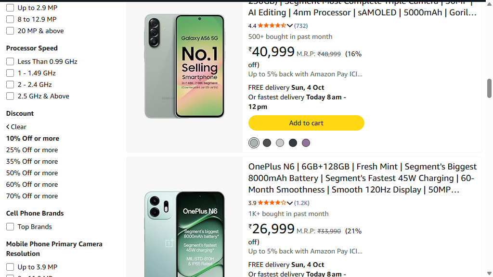
Info 10:13:30 PM 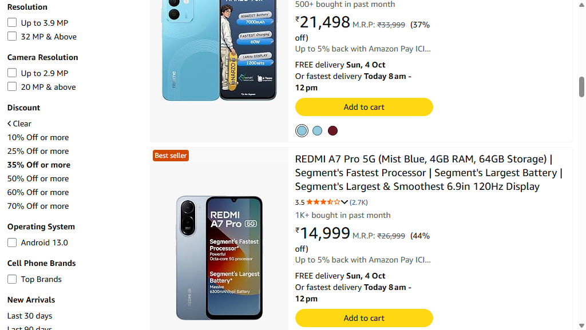
Info 10:13:30 PM 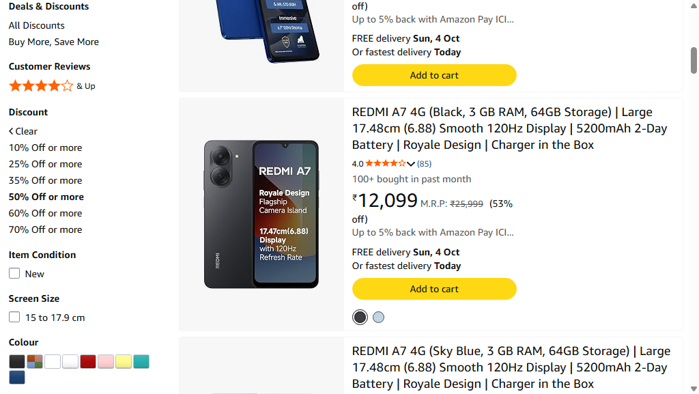
Info 10:13:30 PM 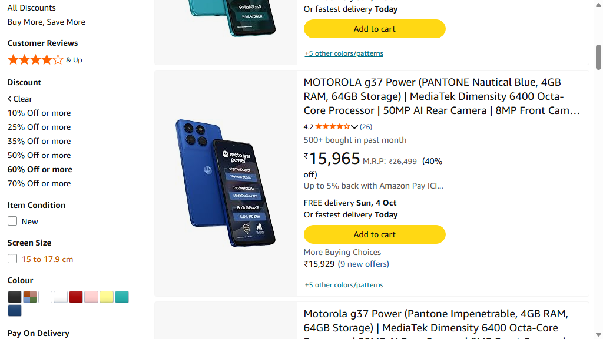
Info 10:13:30 PM 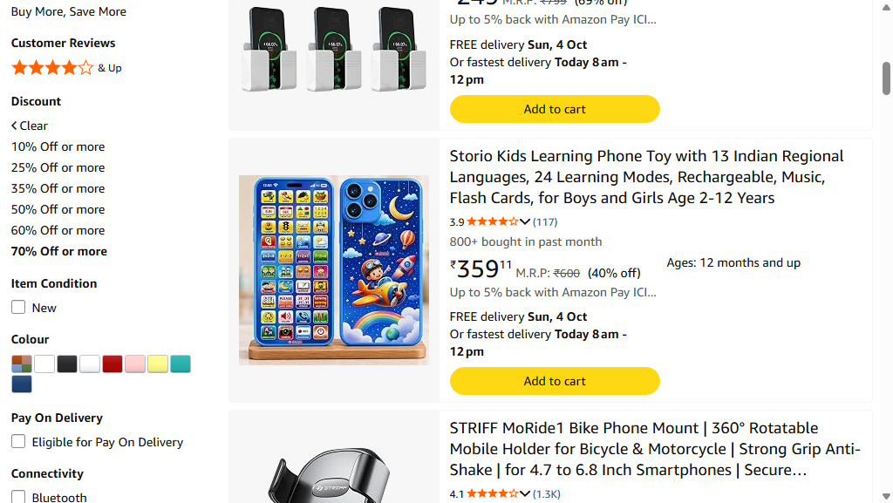
-
verifyingBatteryCapacityFilterFunctionality_Mobile_22-01-14
10:01:30 PM / 00:03:36:615 Fail
verifyingBatteryCapacityFilterFunctionality_Mobile_22-01-14
10.01.2026 10:01:30 PM 10.01.2026 10:05:07 PM 00:03:36:615 · #test-id=2Status Timestamp Details Info 10:01:30 PM Test Input Parameter: Mobile Fail 10:05:07 PM Info 10:05:07 PM 📂 Logs: Info 10:05:07 PM 📄 verifyingBatteryCapacityFilterFunctionality_Mobile_22-01-14.log Info 10:05:07 PM 📸 Screenshots: Info 10:05:07 PM 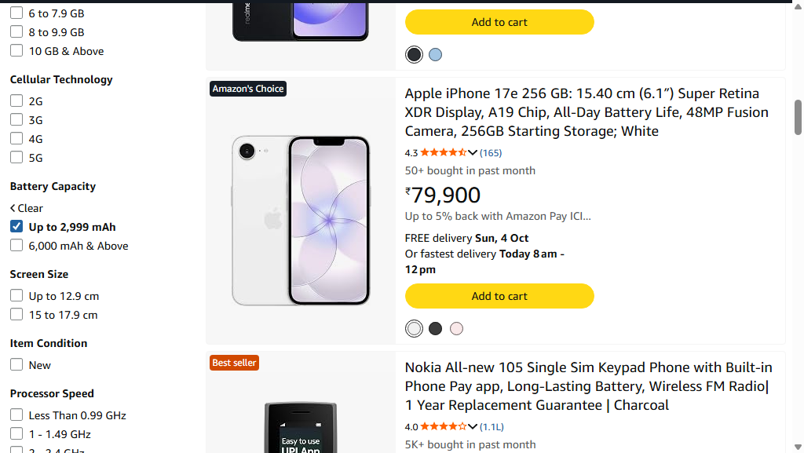
-
verifyingDisplaySizeFilterFunctionality_Mobile_22-01-14
10:01:32 PM / 00:05:03:162 Fail
verifyingDisplaySizeFilterFunctionality_Mobile_22-01-14
10.01.2026 10:01:32 PM 10.01.2026 10:06:35 PM 00:05:03:162 · #test-id=3Status Timestamp Details Info 10:01:32 PM Test Input Parameter: Mobile Fail 10:06:35 PM Info 10:06:35 PM 📂 Logs: Info 10:06:35 PM 📄 verifyingDisplaySizeFilterFunctionality_Mobile_22-01-14.log Info 10:06:35 PM 📸 Screenshots: Info 10:06:35 PM 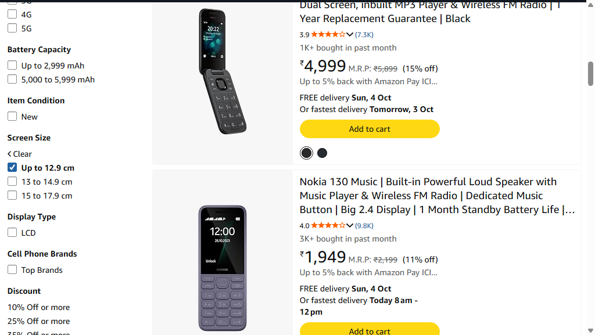
Info 10:06:35 PM 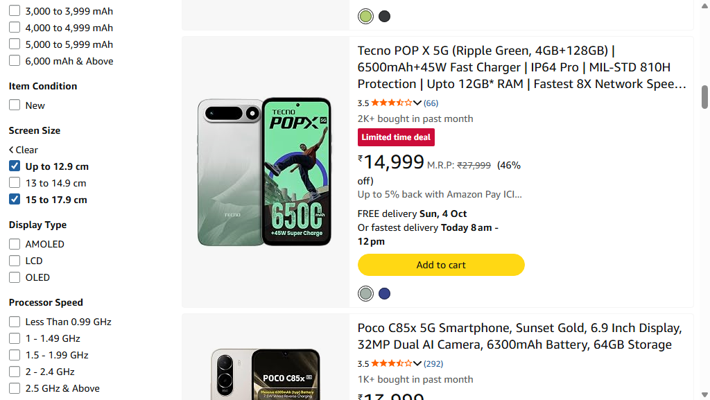
-
verifyingBatteryCapacityFilterFunctionality_Laptop_22-05-08
10:05:10 PM / 00:00:07:913 Pass
verifyingBatteryCapacityFilterFunctionality_Laptop_22-05-08
10.01.2026 10:05:10 PM 10.01.2026 10:05:18 PM 00:00:07:913 · #test-id=4Status Timestamp Details Info 10:05:10 PM Test Input Parameter: Laptop Pass 10:05:18 PM Test Passed Info 10:05:18 PM 📂 Logs: Info 10:05:18 PM 📄 verifyingBatteryCapacityFilterFunctionality_Laptop_22-05-08.log -
verifyingBatteryCapacityFilterFunctionality_Tablet_22-05-18
10:05:20 PM / 00:00:06:532 Pass
verifyingBatteryCapacityFilterFunctionality_Tablet_22-05-18
10.01.2026 10:05:20 PM 10.01.2026 10:05:27 PM 00:00:06:532 · #test-id=5Status Timestamp Details Info 10:05:20 PM Test Input Parameter: Tablet Pass 10:05:27 PM Test Passed Info 10:05:27 PM 📂 Logs: Info 10:05:27 PM 📄 verifyingBatteryCapacityFilterFunctionality_Tablet_22-05-18.log -
verifyingDisplayTypeFilterFunctionality_Mobile_22-05-27
10:05:29 PM / 00:02:03:327 Fail
verifyingDisplayTypeFilterFunctionality_Mobile_22-05-27
10.01.2026 10:05:29 PM 10.01.2026 10:07:32 PM 00:02:03:327 · #test-id=6Status Timestamp Details Info 10:05:29 PM Test Input Parameter: Mobile Fail 10:07:32 PM Info 10:07:32 PM 📂 Logs: Info 10:07:32 PM 📄 verifyingDisplayTypeFilterFunctionality_Mobile_22-05-27.log Info 10:07:32 PM 📸 Screenshots: Info 10:07:32 PM 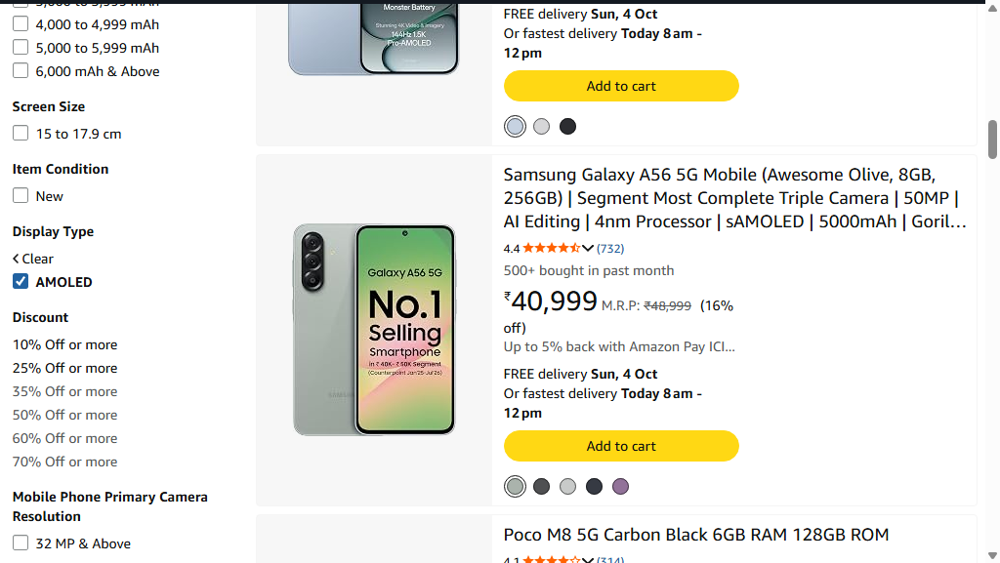
-
verifyingDisplaySizeFilterFunctionality_Laptop_22-06-46
10:06:49 PM / 00:11:53:031 Fail
verifyingDisplaySizeFilterFunctionality_Laptop_22-06-46
10.01.2026 10:06:49 PM 10.01.2026 10:18:42 PM 00:11:53:031 · #test-id=7Status Timestamp Details Info 10:06:49 PM Test Input Parameter: Laptop Fail 10:18:42 PM Info 10:18:42 PM 📂 Logs: Info 10:18:42 PM 📄 verifyingDisplaySizeFilterFunctionality_Laptop_22-06-46.log Info 10:18:42 PM 📸 Screenshots: Info 10:18:42 PM 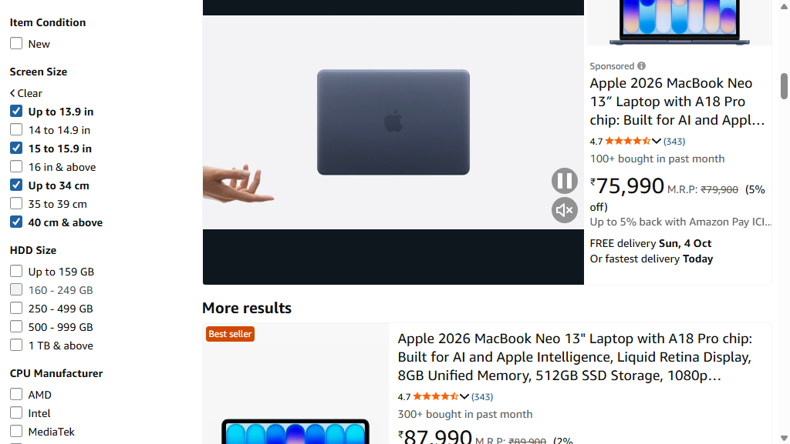
Info 10:18:42 PM 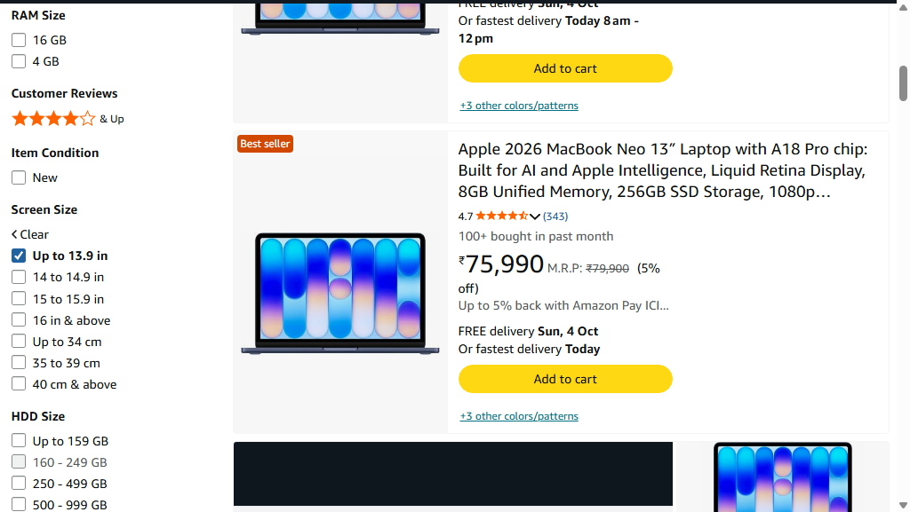
Info 10:18:42 PM 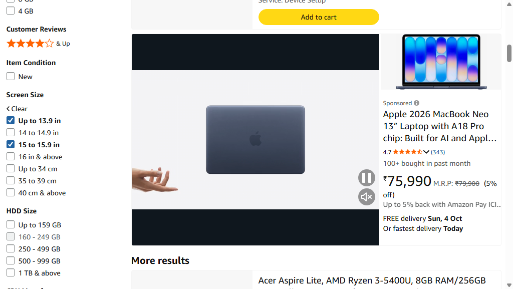
Info 10:18:42 PM 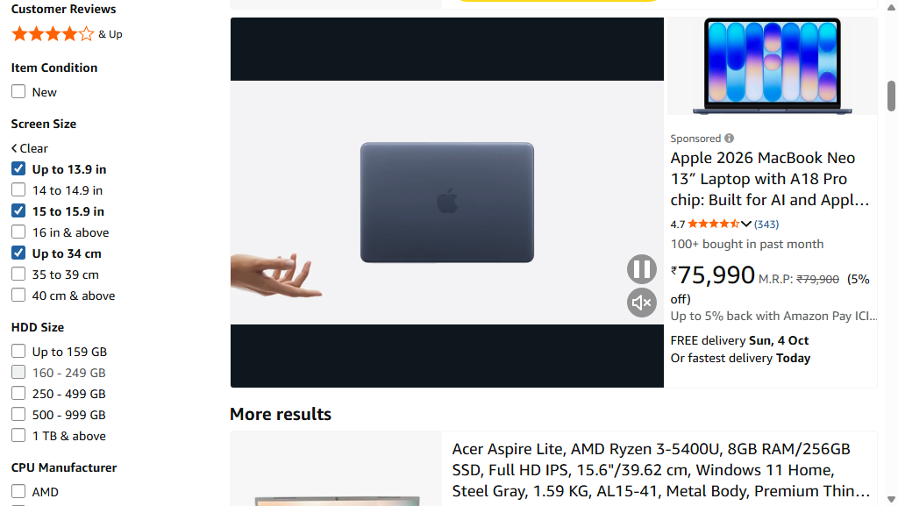
-
verifyingDisplayTypeFilterFunctionality_Laptop_22-07-33
10:07:35 PM / 00:04:59:161 Fail
verifyingDisplayTypeFilterFunctionality_Laptop_22-07-33
10.01.2026 10:07:35 PM 10.01.2026 10:12:35 PM 00:04:59:161 · #test-id=8Status Timestamp Details Info 10:07:35 PM Test Input Parameter: Laptop Fail 10:12:35 PM Info 10:12:35 PM 📂 Logs: Info 10:12:35 PM 📄 verifyingDisplayTypeFilterFunctionality_Laptop_22-07-33.log Info 10:12:35 PM 📸 Screenshots: Info 10:12:35 PM 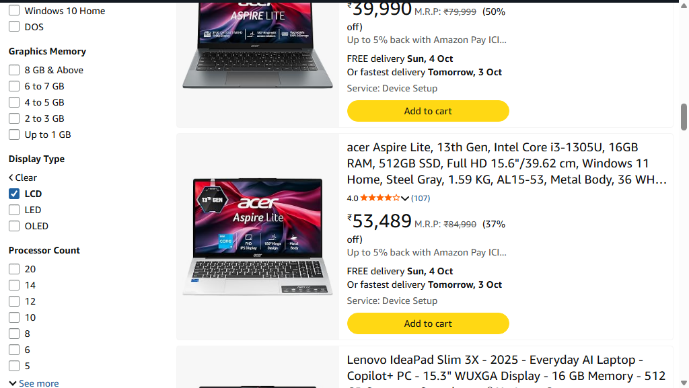
Info 10:12:35 PM 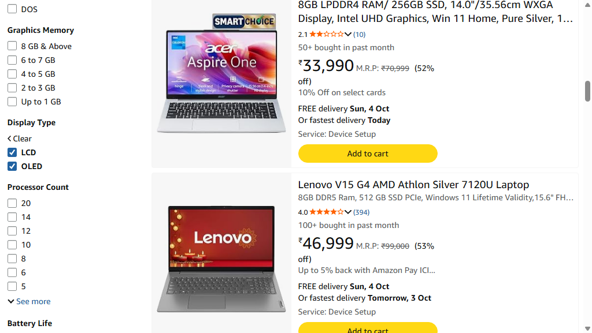
-
verifyingDisplayTypeFilterFunctionality_Tablet_22-12-36
10:12:39 PM / 00:04:25:405 Fail
verifyingDisplayTypeFilterFunctionality_Tablet_22-12-36
10.01.2026 10:12:39 PM 10.01.2026 10:17:04 PM 00:04:25:405 · #test-id=9Status Timestamp Details Info 10:12:39 PM Test Input Parameter: Tablet Fail 10:17:04 PM Info 10:17:04 PM 📂 Logs: Info 10:17:04 PM 📄 verifyingDisplayTypeFilterFunctionality_Tablet_22-12-36.log Info 10:17:04 PM 📸 Screenshots: Info 10:17:04 PM 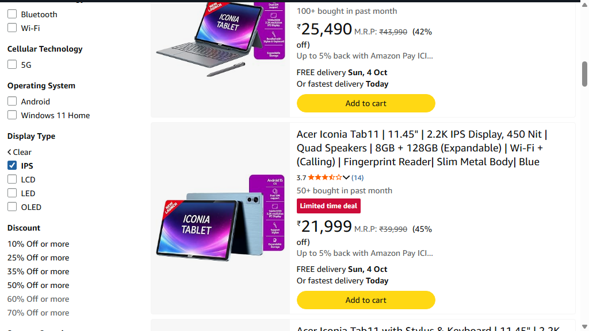
Info 10:17:04 PM 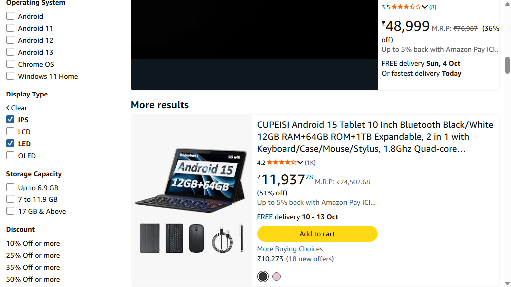
-
verifyingDiscountFilterFunctionality_Laptop_22-13-32
10:13:34 PM / 00:13:40:184 Fail
verifyingDiscountFilterFunctionality_Laptop_22-13-32
10.01.2026 10:13:34 PM 10.01.2026 10:27:14 PM 00:13:40:184 · #test-id=10Status Timestamp Details Info 10:13:34 PM Test Input Parameter: Laptop Fail 10:27:14 PM Info 10:27:14 PM 📂 Logs: Info 10:27:14 PM 📄 verifyingDiscountFilterFunctionality_Laptop_22-13-32.log Info 10:27:14 PM 📸 Screenshots: Info 10:27:14 PM 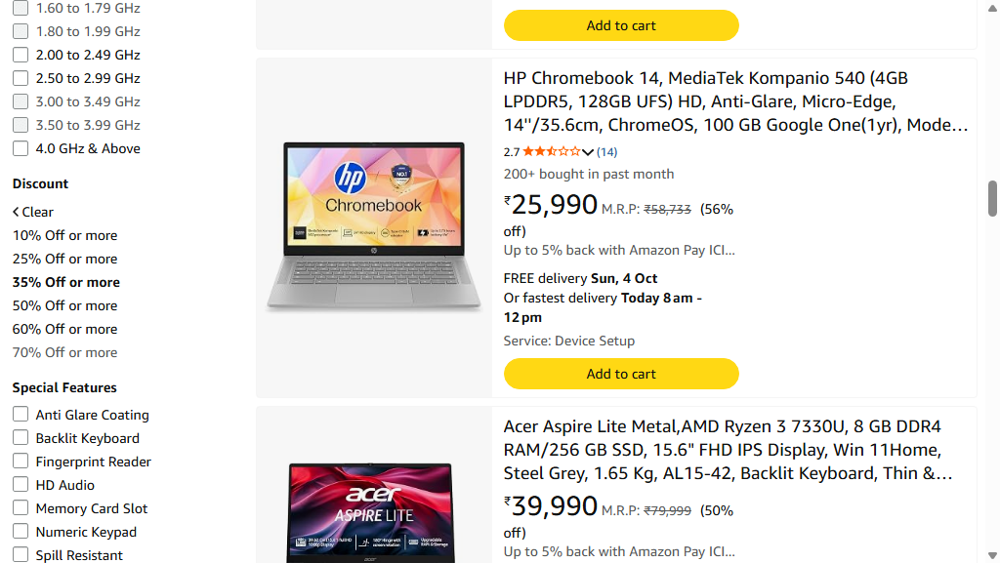
Info 10:27:14 PM 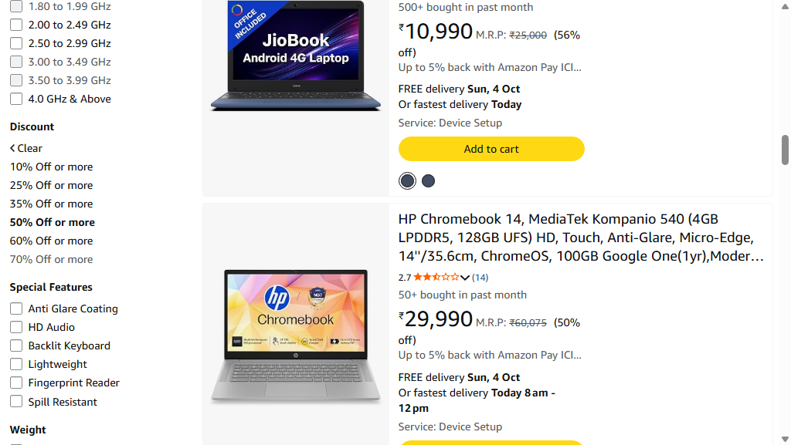
Info 10:27:14 PM 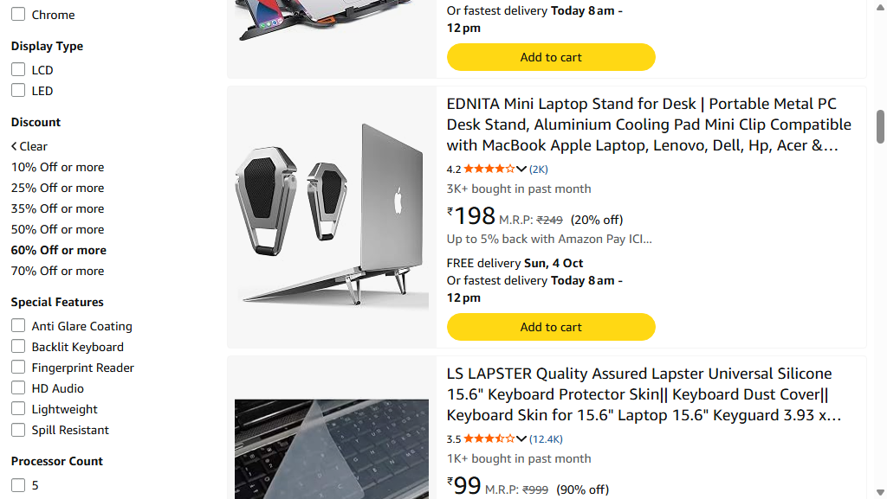
Info 10:27:14 PM 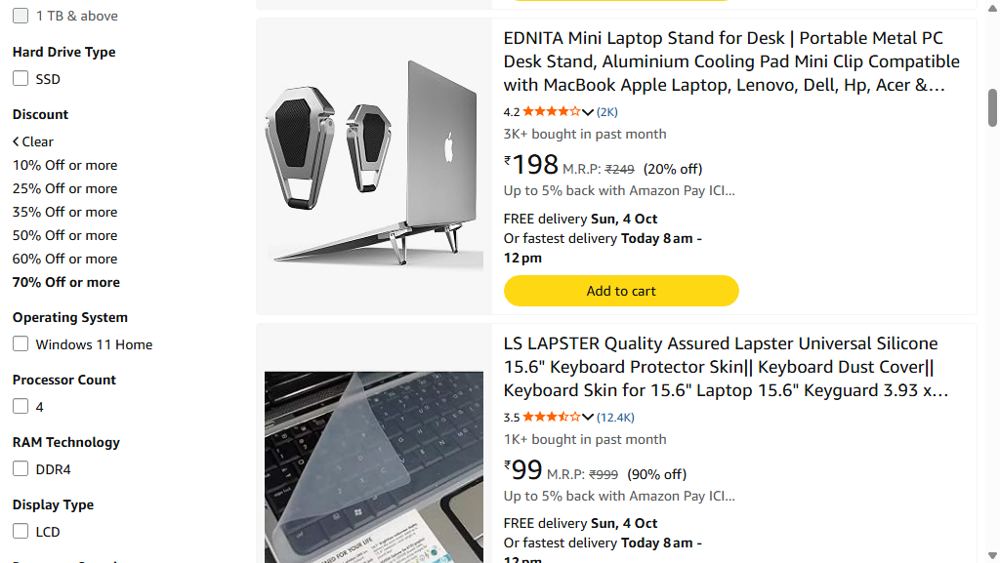
Info 10:27:14 PM 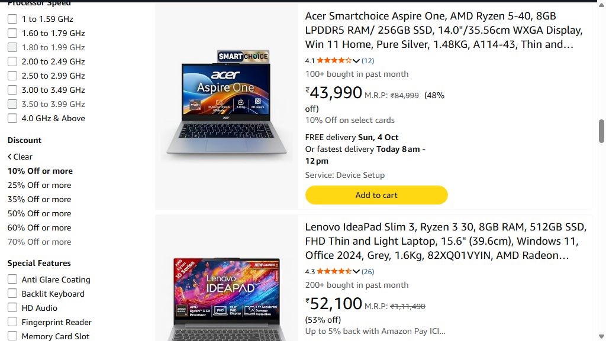
-
verifyingFreeDeliveryFilterFunctionality_Mobile_22-17-05
10:17:09 PM / 00:00:09:671 Pass
verifyingFreeDeliveryFilterFunctionality_Mobile_22-17-05
10.01.2026 10:17:09 PM 10.01.2026 10:17:18 PM 00:00:09:671 · #test-id=11Status Timestamp Details Info 10:17:09 PM Test Input Parameter: Mobile Pass 10:17:18 PM Test Passed Info 10:17:18 PM 📂 Logs: Info 10:17:18 PM 📄 verifyingFreeDeliveryFilterFunctionality_Mobile_22-17-05.log Info 10:17:18 PM 📸 Screenshots: Info 10:17:18 PM -
verifyingFreeDeliveryFilterFunctionality_Laptop_22-17-19
10:17:21 PM / 00:00:07:640 Pass
verifyingFreeDeliveryFilterFunctionality_Laptop_22-17-19
10.01.2026 10:17:21 PM 10.01.2026 10:17:28 PM 00:00:07:640 · #test-id=12Status Timestamp Details Info 10:17:21 PM Test Input Parameter: Laptop Pass 10:17:28 PM Test Passed Info 10:17:28 PM 📂 Logs: Info 10:17:28 PM 📄 verifyingFreeDeliveryFilterFunctionality_Laptop_22-17-19.log Info 10:17:28 PM 📸 Screenshots: Info 10:17:28 PM -
verifyingFreeDeliveryFilterFunctionality_Tablet_22-17-29
10:17:31 PM / 00:00:13:287 Pass
verifyingFreeDeliveryFilterFunctionality_Tablet_22-17-29
10.01.2026 10:17:31 PM 10.01.2026 10:17:44 PM 00:00:13:287 · #test-id=13Status Timestamp Details Info 10:17:31 PM Test Input Parameter: Tablet Pass 10:17:44 PM Test Passed Info 10:17:44 PM 📂 Logs: Info 10:17:44 PM 📄 verifyingFreeDeliveryFilterFunctionality_Tablet_22-17-29.log Info 10:17:44 PM 📸 Screenshots: Info 10:17:44 PM -
verifyingGetItByTodayFilterFunctionality_Mobile_22-17-44
10:17:46 PM / 00:00:07:440 Pass
verifyingGetItByTodayFilterFunctionality_Mobile_22-17-44
10.01.2026 10:17:46 PM 10.01.2026 10:17:53 PM 00:00:07:440 · #test-id=14Status Timestamp Details Info 10:17:46 PM Test Input Parameter: Mobile Pass 10:17:53 PM Test Passed Info 10:17:53 PM 📂 Logs: Info 10:17:53 PM 📄 verifyingGetItByTodayFilterFunctionality_Mobile_22-17-44.log Info 10:17:53 PM 📸 Screenshots: Info 10:17:53 PM 
Info 10:17:53 PM Info 10:17:53 PM 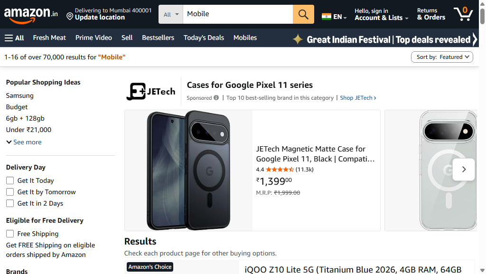
Info 10:17:53 PM -
verifyingGetItByTodayFilterFunctionality_Laptop_22-17-54
10:17:57 PM / 00:00:13:015 Pass
verifyingGetItByTodayFilterFunctionality_Laptop_22-17-54
10.01.2026 10:17:57 PM 10.01.2026 10:18:10 PM 00:00:13:015 · #test-id=15Status Timestamp Details Info 10:17:57 PM Test Input Parameter: Laptop Pass 10:18:10 PM Test Passed Info 10:18:10 PM 📂 Logs: Info 10:18:10 PM 📄 verifyingGetItByTodayFilterFunctionality_Laptop_22-17-54.log Info 10:18:10 PM 📸 Screenshots: Info 10:18:10 PM Info 10:18:10 PM Info 10:18:10 PM Info 10:18:10 PM -
verifyingGetItByTodayFilterFunctionality_Tablet_22-18-10
10:18:12 PM / 00:00:17:647 Pass
verifyingGetItByTodayFilterFunctionality_Tablet_22-18-10
10.01.2026 10:18:12 PM 10.01.2026 10:18:30 PM 00:00:17:647 · #test-id=16Status Timestamp Details Info 10:18:12 PM Test Input Parameter: Tablet Pass 10:18:30 PM Test Passed Info 10:18:30 PM 📂 Logs: Info 10:18:30 PM 📄 verifyingGetItByTodayFilterFunctionality_Tablet_22-18-10.log Info 10:18:30 PM 📸 Screenshots: Info 10:18:30 PM 
Info 10:18:30 PM Info 10:18:30 PM 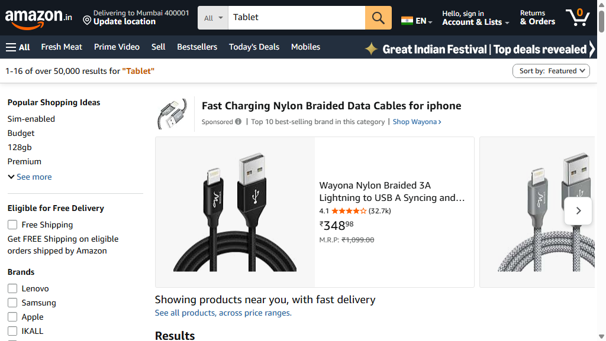
-
verifyingGetItByTomorrowFilterFunctionality_Mobile_22-18-30
10:18:33 PM / 00:00:09:327 Pass
verifyingGetItByTomorrowFilterFunctionality_Mobile_22-18-30
10.01.2026 10:18:33 PM 10.01.2026 10:18:42 PM 00:00:09:327 · #test-id=17Status Timestamp Details Info 10:18:33 PM Test Input Parameter: Mobile Pass 10:18:42 PM Test Passed Info 10:18:42 PM 📂 Logs: Info 10:18:42 PM 📄 verifyingGetItByTomorrowFilterFunctionality_Mobile_22-18-30.log Info 10:18:42 PM 📸 Screenshots: Info 10:18:42 PM Info 10:18:42 PM 
-
verifyingGetItByTomorrowFilterFunctionality_Laptop_22-18-43
10:18:46 PM / 00:00:17:749 Pass
verifyingGetItByTomorrowFilterFunctionality_Laptop_22-18-43
10.01.2026 10:18:46 PM 10.01.2026 10:19:04 PM 00:00:17:749 · #test-id=18Status Timestamp Details Info 10:18:46 PM Test Input Parameter: Laptop Pass 10:19:04 PM Test Passed Info 10:19:04 PM 📂 Logs: Info 10:19:04 PM 📄 verifyingGetItByTomorrowFilterFunctionality_Laptop_22-18-43.log Info 10:19:04 PM 📸 Screenshots: Info 10:19:04 PM Info 10:19:04 PM -
verifyingDisplaySizeFilterFunctionality_Tablet_22-18-44
10:18:47 PM / 00:00:15:653 Pass
verifyingDisplaySizeFilterFunctionality_Tablet_22-18-44
10.01.2026 10:18:47 PM 10.01.2026 10:19:03 PM 00:00:15:653 · #test-id=19Status Timestamp Details Info 10:18:47 PM Test Input Parameter: Tablet Pass 10:19:03 PM Test Passed Info 10:19:03 PM 📂 Logs: Info 10:19:03 PM 📄 verifyingDisplaySizeFilterFunctionality_Tablet_22-18-44.log -
verifyingGetItIn2DaysFilterFunctionality_Mobile_22-19-04
10:19:08 PM / 00:00:15:335 Pass
verifyingGetItIn2DaysFilterFunctionality_Mobile_22-19-04
10.01.2026 10:19:08 PM 10.01.2026 10:19:23 PM 00:00:15:335 · #test-id=20Status Timestamp Details Info 10:19:08 PM Test Input Parameter: Mobile Pass 10:19:23 PM Test Passed Info 10:19:23 PM 📂 Logs: Info 10:19:23 PM 📄 verifyingGetItIn2DaysFilterFunctionality_Mobile_22-19-04.log Info 10:19:23 PM 📸 Screenshots: Info 10:19:23 PM 
Info 10:19:23 PM -
verifyingGetItByTomorrowFilterFunctionality_Tablet_22-19-05
10:19:10 PM / 00:00:13:813 Pass
verifyingGetItByTomorrowFilterFunctionality_Tablet_22-19-05
10.01.2026 10:19:10 PM 10.01.2026 10:19:24 PM 00:00:13:813 · #test-id=21Status Timestamp Details Info 10:19:10 PM Test Input Parameter: Tablet Pass 10:19:24 PM Test Passed Info 10:19:24 PM 📂 Logs: Info 10:19:24 PM 📄 verifyingGetItByTomorrowFilterFunctionality_Tablet_22-19-05.log Info 10:19:24 PM 📸 Screenshots: Info 10:19:24 PM 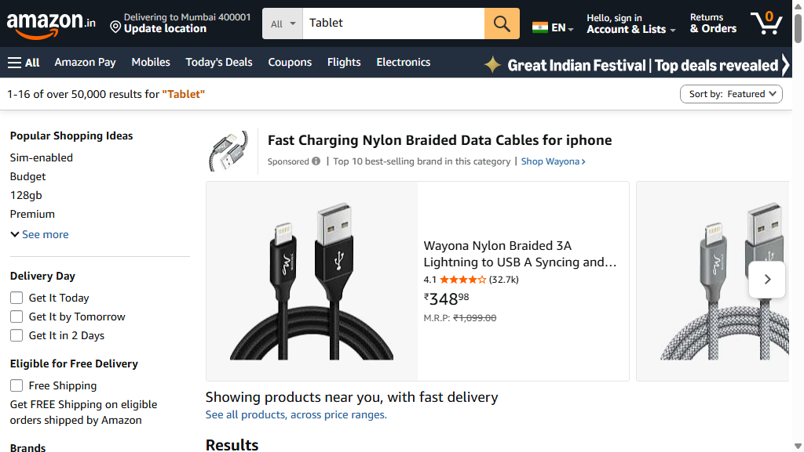
Info 10:19:24 PM 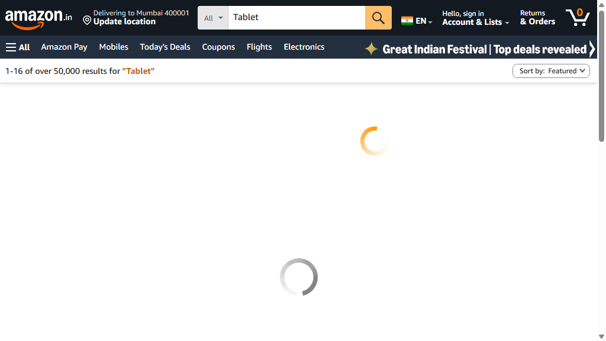
-
verifyingGetItIn2DaysFilterFunctionality_Laptop_22-19-24
10:19:28 PM / 00:00:15:676 Pass
verifyingGetItIn2DaysFilterFunctionality_Laptop_22-19-24
10.01.2026 10:19:28 PM 10.01.2026 10:19:44 PM 00:00:15:676 · #test-id=22Status Timestamp Details Info 10:19:28 PM Test Input Parameter: Laptop Pass 10:19:44 PM Test Passed Info 10:19:44 PM 📂 Logs: Info 10:19:44 PM 📄 verifyingGetItIn2DaysFilterFunctionality_Laptop_22-19-24.log Info 10:19:44 PM 📸 Screenshots: Info 10:19:44 PM 
Info 10:19:44 PM 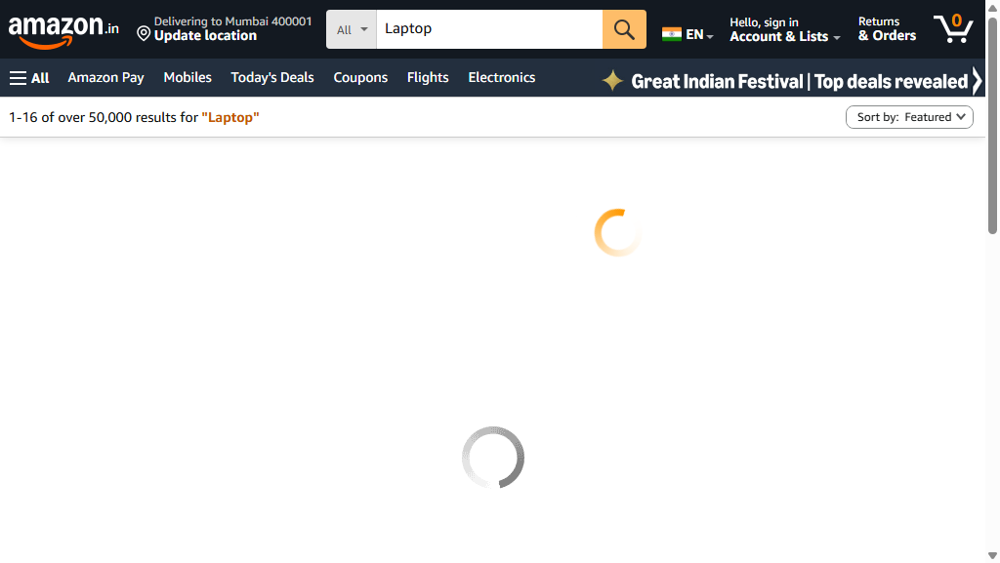
-
verifyingMobilePhonePrimaryCameraResolutionFilterFunctionality_Mobile_22-19-26
10:19:29 PM / 00:11:03:587 Fail
verifyingMobilePhonePrimaryCameraResolutionFilterFunctionality_Mobile_22-19-26
10.01.2026 10:19:29 PM 10.01.2026 10:30:33 PM 00:11:03:587 · #test-id=23Status Timestamp Details Info 10:19:29 PM Test Input Parameter: Mobile Fail 10:30:33 PM Info 10:30:33 PM 📂 Logs: Info 10:30:33 PM 📄 verifyingMobilePhonePrimaryCameraResolutionFilterFunctionality_Mobile_22-19-26.log Info 10:30:33 PM 📸 Screenshots: Info 10:30:33 PM 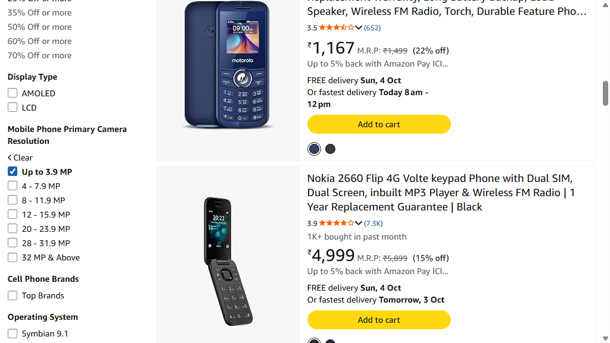
Info 10:30:33 PM 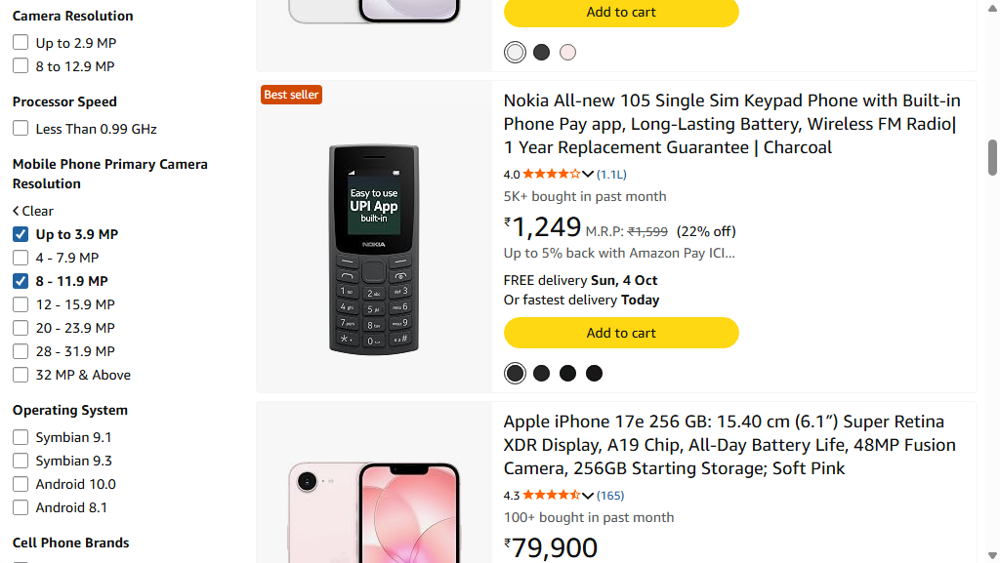
Info 10:30:33 PM 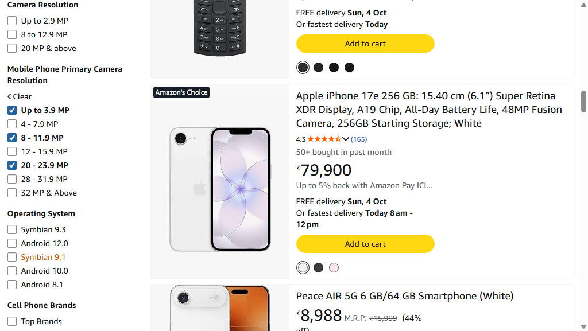
Info 10:30:33 PM 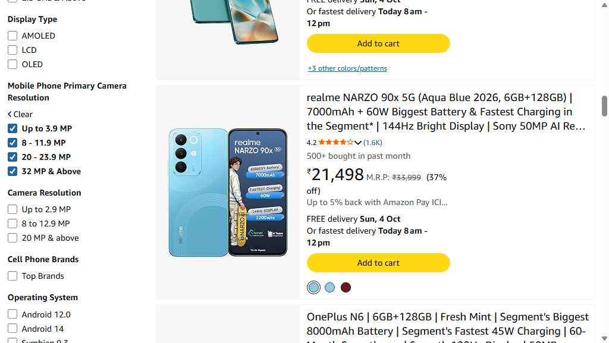
-
verifyingGetItIn2DaysFilterFunctionality_Tablet_22-19-47
10:19:49 PM / 00:00:10:481 Pass
verifyingGetItIn2DaysFilterFunctionality_Tablet_22-19-47
10.01.2026 10:19:49 PM 10.01.2026 10:20:00 PM 00:00:10:481 · #test-id=24Status Timestamp Details Info 10:19:49 PM Test Input Parameter: Tablet Pass 10:20:00 PM Test Passed Info 10:20:00 PM 📂 Logs: Info 10:20:00 PM 📄 verifyingGetItIn2DaysFilterFunctionality_Tablet_22-19-47.log Info 10:20:00 PM 📸 Screenshots: Info 10:20:00 PM 
Info 10:20:00 PM -
verifyingOperatingSystemVersionFilterFunctionality_Mobile_22-20-00
10:20:02 PM / 00:17:32:933 Fail
verifyingOperatingSystemVersionFilterFunctionality_Mobile_22-20-00
10.01.2026 10:20:02 PM 10.01.2026 10:37:35 PM 00:17:32:933 · #test-id=25Status Timestamp Details Info 10:20:02 PM Test Input Parameter: Mobile Fail 10:37:35 PM Info 10:37:35 PM 📂 Logs: Info 10:37:35 PM 📄 verifyingOperatingSystemVersionFilterFunctionality_Mobile_22-20-00.log Info 10:37:35 PM 📸 Screenshots: Info 10:37:35 PM 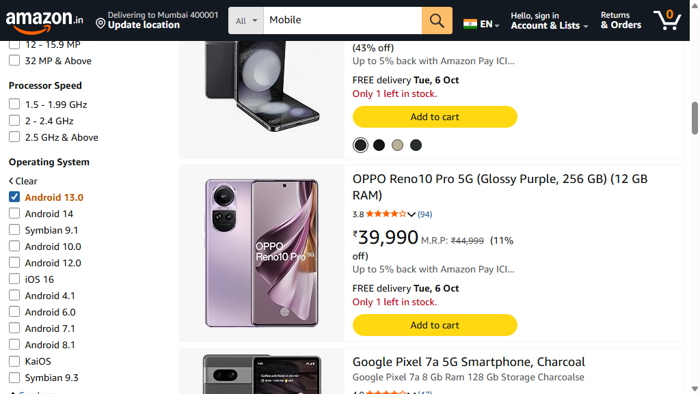
Info 10:37:35 PM 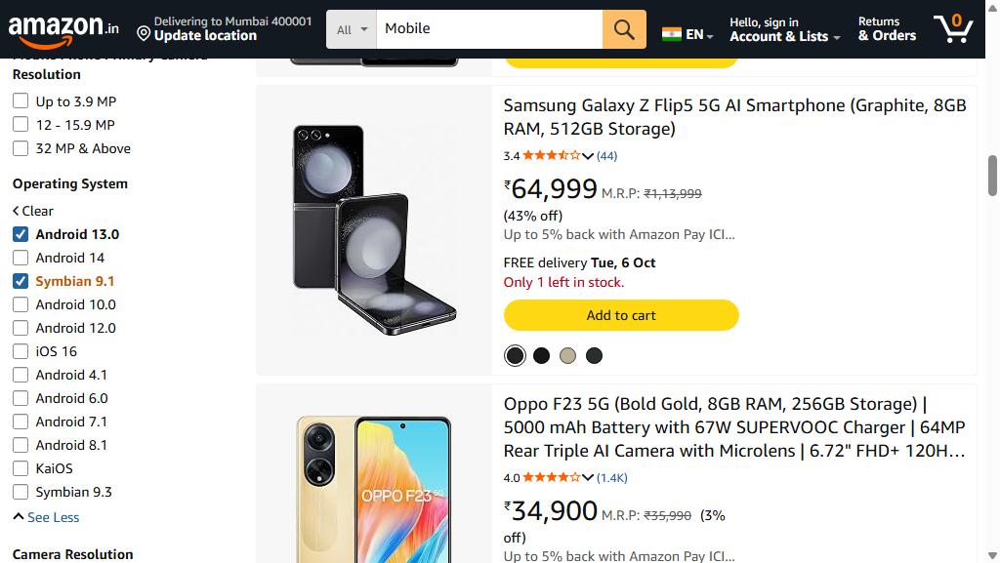
Info 10:37:35 PM 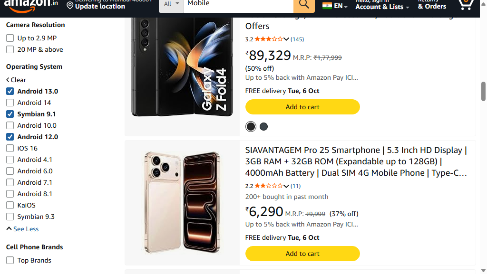
Info 10:37:35 PM 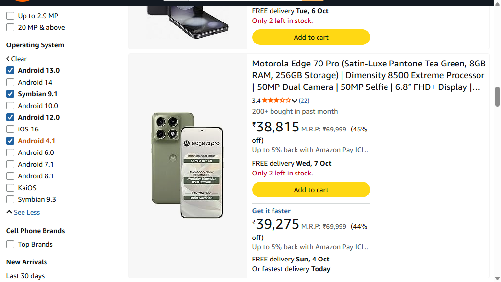
Info 10:37:35 PM Info 10:37:35 PM 
Info 10:37:35 PM 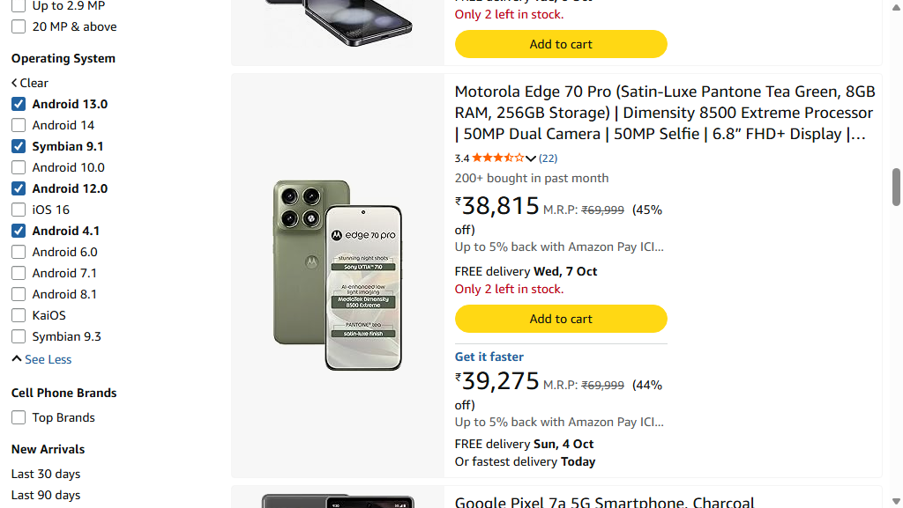
Info 10:37:35 PM 
Info 10:37:35 PM 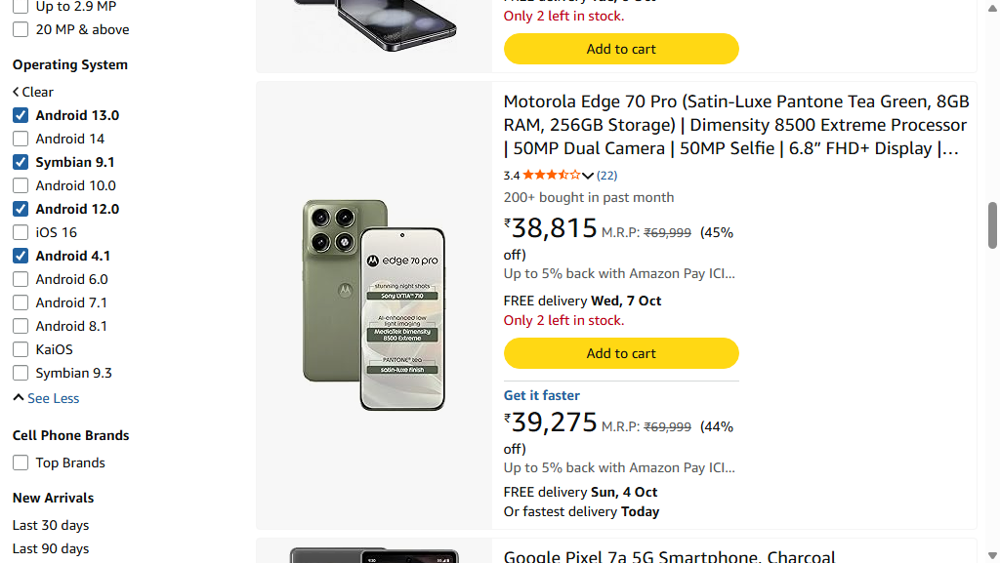
Info 10:37:35 PM 
Info 10:37:35 PM 
Info 10:37:35 PM 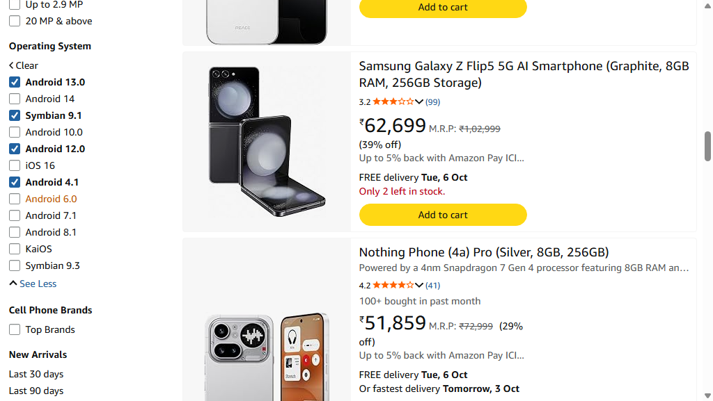
Info 10:37:35 PM Info 10:37:35 PM Info 10:37:35 PM 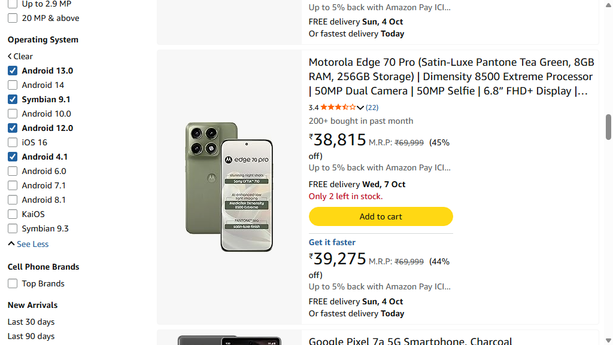
Info 10:37:35 PM 
-
verifyingDiscountFilterFunctionality_Tablet_22-27-15
10:27:17 PM / 00:13:13:358 Fail
verifyingDiscountFilterFunctionality_Tablet_22-27-15
10.01.2026 10:27:17 PM 10.01.2026 10:40:30 PM 00:13:13:358 · #test-id=26Status Timestamp Details Info 10:27:17 PM Test Input Parameter: Tablet Fail 10:40:30 PM Info 10:40:30 PM 📂 Logs: Info 10:40:30 PM 📄 verifyingDiscountFilterFunctionality_Tablet_22-27-15.log Info 10:40:30 PM 📸 Screenshots: Info 10:40:30 PM 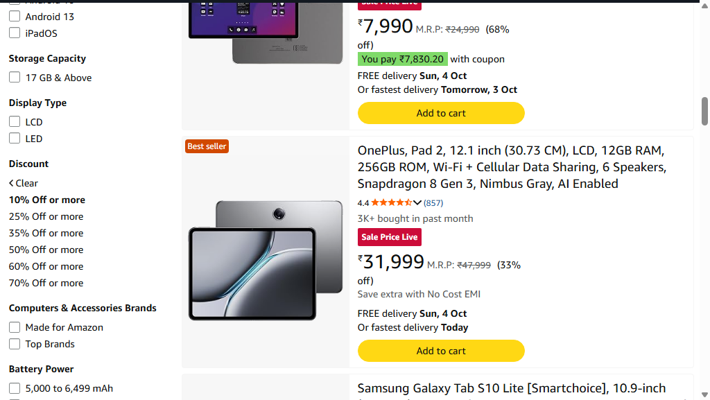
Info 10:40:30 PM 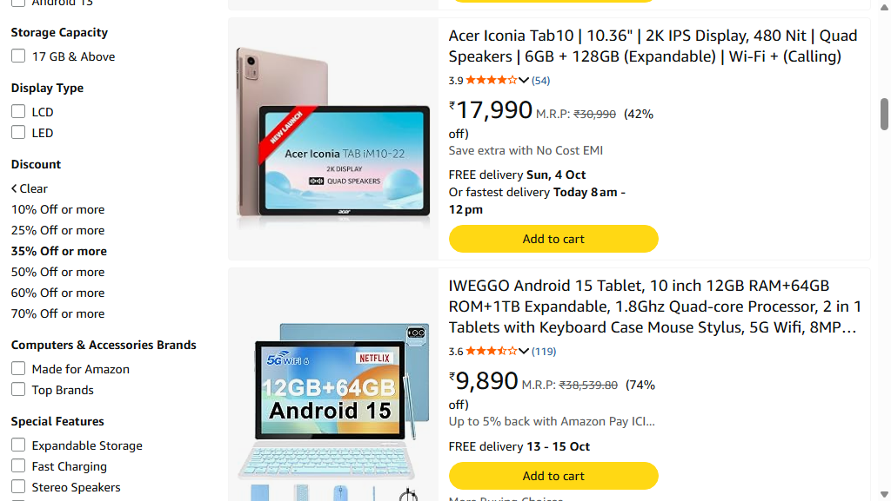
Info 10:40:30 PM 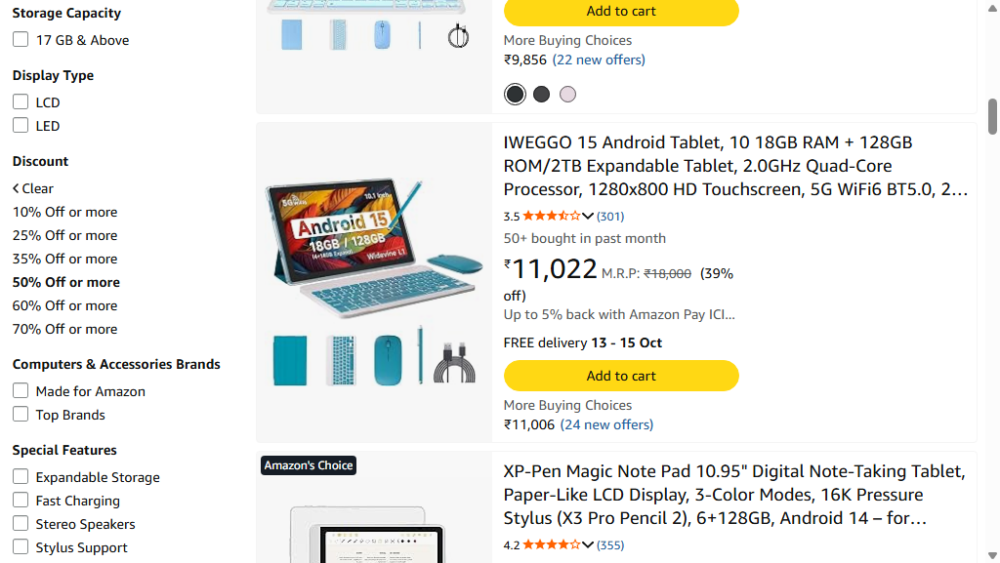
Info 10:40:30 PM 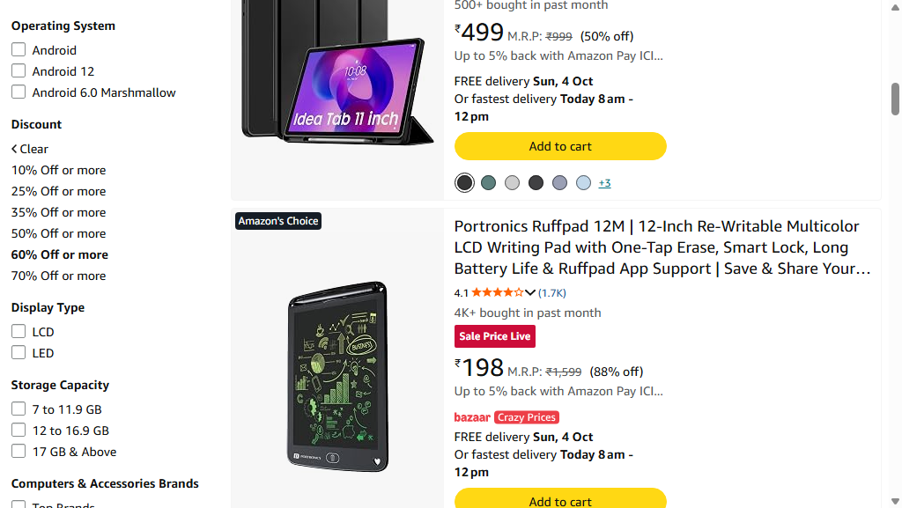
Info 10:40:30 PM 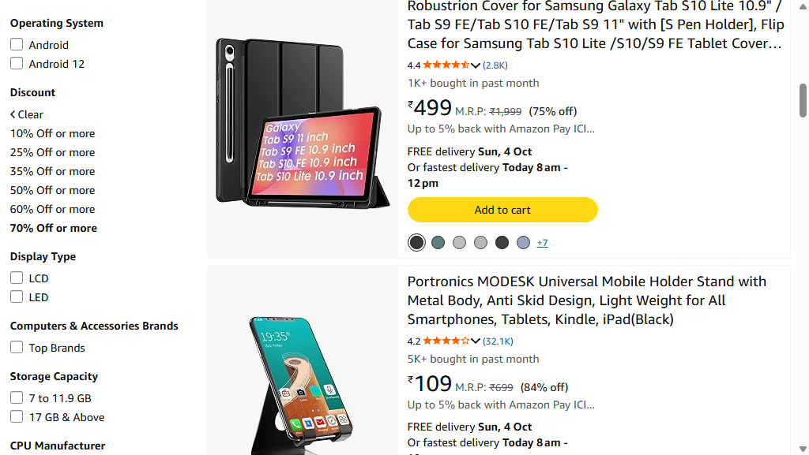
-
verifyingMobilePhonePrimaryCameraResolutionFilterFunctionality_Laptop_22-30-34
10:30:36 PM / 00:00:07:570 Pass
verifyingMobilePhonePrimaryCameraResolutionFilterFunctionality_Laptop_22-30-34
10.01.2026 10:30:36 PM 10.01.2026 10:30:44 PM 00:00:07:570 · #test-id=27Status Timestamp Details Info 10:30:36 PM Test Input Parameter: Laptop Pass 10:30:44 PM Test Passed Info 10:30:44 PM 📂 Logs: Info 10:30:44 PM 📄 verifyingMobilePhonePrimaryCameraResolutionFilterFunctionality_Laptop_22-30-34.log -
verifyingMobilePhonePrimaryCameraResolutionFilterFunctionality_Tablet_22-30-44
10:30:46 PM / 00:00:06:531 Pass
verifyingMobilePhonePrimaryCameraResolutionFilterFunctionality_Tablet_22-30-44
10.01.2026 10:30:46 PM 10.01.2026 10:30:53 PM 00:00:06:531 · #test-id=28Status Timestamp Details Info 10:30:46 PM Test Input Parameter: Tablet Pass 10:30:53 PM Test Passed Info 10:30:53 PM 📂 Logs: Info 10:30:53 PM 📄 verifyingMobilePhonePrimaryCameraResolutionFilterFunctionality_Tablet_22-30-44.log -
verifyingPriceSilderFunctionality_Mobile_22-30-53
10:30:54 PM / 00:00:15:120 Pass
verifyingPriceSilderFunctionality_Mobile_22-30-53
10.01.2026 10:30:54 PM 10.01.2026 10:31:10 PM 00:00:15:120 · #test-id=29Status Timestamp Details Pass 10:31:10 PM Test Passed Info 10:31:10 PM 📂 Logs: Info 10:31:10 PM 📄 verifyingPriceSilderFunctionality_Mobile_22-30-53.log Info 10:31:10 PM 📸 Screenshots: Info 10:31:10 PM 
Info 10:31:10 PM 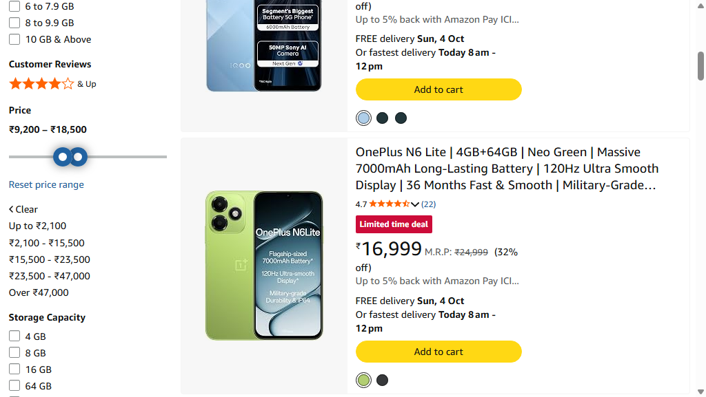
Info 10:31:10 PM 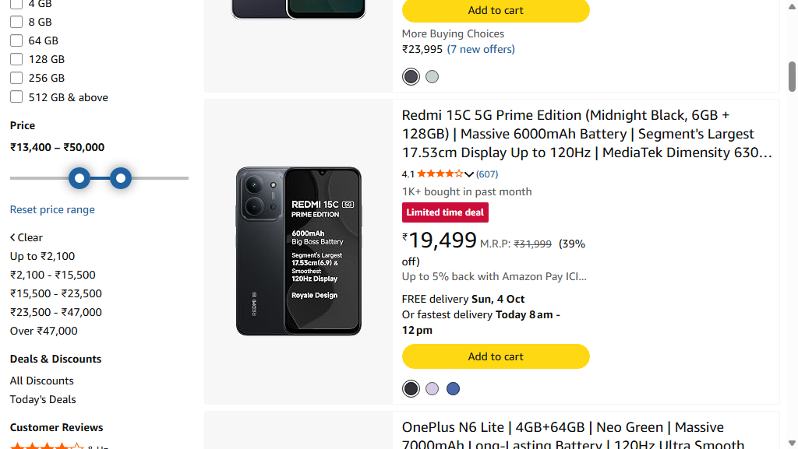
Info 10:31:10 PM 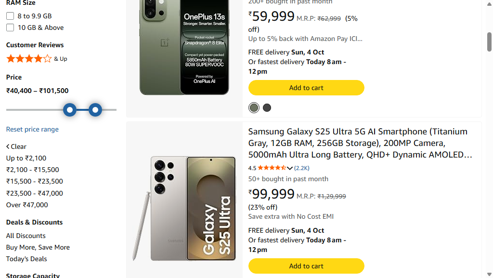
-
verifyingPriceSilderFunctionality_Laptop_22-31-11
10:31:12 PM / 00:00:15:707 Pass
verifyingPriceSilderFunctionality_Laptop_22-31-11
10.01.2026 10:31:12 PM 10.01.2026 10:31:28 PM 00:00:15:707 · #test-id=30Status Timestamp Details Pass 10:31:28 PM Test Passed Info 10:31:28 PM 📂 Logs: Info 10:31:28 PM 📄 verifyingPriceSilderFunctionality_Laptop_22-31-11.log Info 10:31:28 PM 📸 Screenshots: Info 10:31:28 PM 
Info 10:31:28 PM 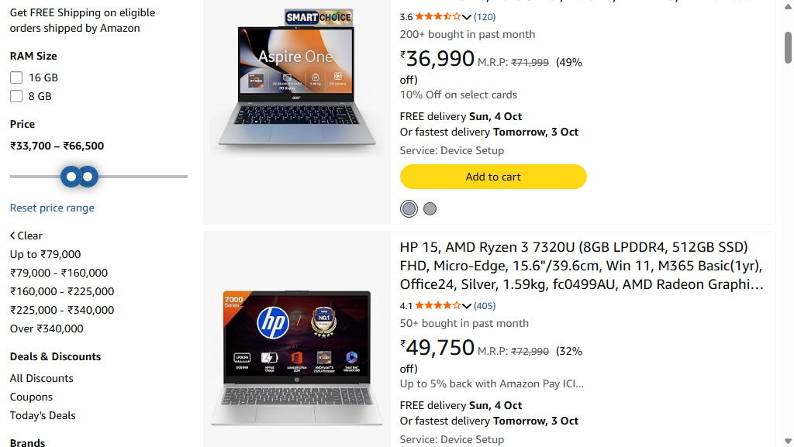
Info 10:31:28 PM Info 10:31:28 PM 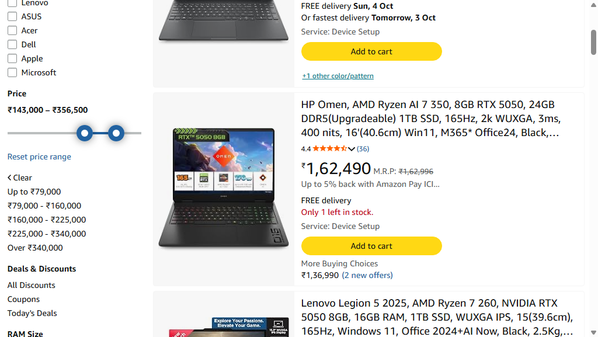
-
verifyingPriceSilderFunctionality_Tablet_22-31-28
10:31:30 PM / 00:00:16:362 Pass
verifyingPriceSilderFunctionality_Tablet_22-31-28
10.01.2026 10:31:30 PM 10.01.2026 10:31:46 PM 00:00:16:362 · #test-id=31Status Timestamp Details Pass 10:31:46 PM Test Passed Info 10:31:46 PM 📂 Logs: Info 10:31:46 PM 📄 verifyingPriceSilderFunctionality_Tablet_22-31-28.log Info 10:31:46 PM 📸 Screenshots: Info 10:31:46 PM 
Info 10:31:46 PM 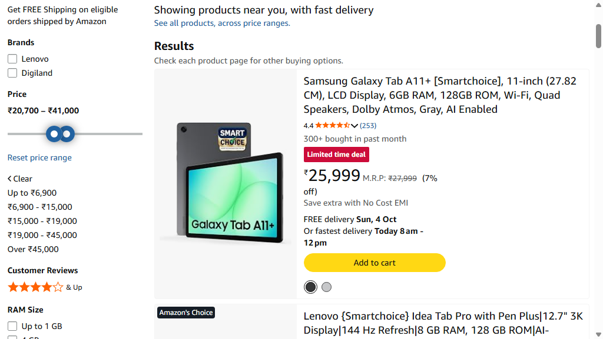
Info 10:31:46 PM Info 10:31:46 PM -
verifyingProcessorSpeedFilterFunctionality_Mobile_22-31-47
10:31:49 PM / 00:08:18:651 Fail
verifyingProcessorSpeedFilterFunctionality_Mobile_22-31-47
10.01.2026 10:31:49 PM 10.01.2026 10:40:08 PM 00:08:18:651 · #test-id=32Status Timestamp Details Info 10:31:49 PM Test Input Parameter: Mobile Fail 10:40:08 PM Info 10:40:08 PM 📂 Logs: Info 10:40:08 PM 📄 verifyingProcessorSpeedFilterFunctionality_Mobile_22-31-47.log Info 10:40:08 PM 📸 Screenshots: Info 10:40:08 PM Info 10:40:08 PM Info 10:40:08 PM -
verifyingOperatingSystemVersionFilterFunctionality_Laptop_22-37-36
10:37:39 PM / 00:08:53:415 Fail
verifyingOperatingSystemVersionFilterFunctionality_Laptop_22-37-36
10.01.2026 10:37:39 PM 10.01.2026 10:46:32 PM 00:08:53:415 · #test-id=33Status Timestamp Details Info 10:37:39 PM Test Input Parameter: Laptop Fail 10:46:32 PM Info 10:46:32 PM 📂 Logs: Info 10:46:32 PM 📄 verifyingOperatingSystemVersionFilterFunctionality_Laptop_22-37-36.log Info 10:46:32 PM 📸 Screenshots: Info 10:46:32 PM Info 10:46:32 PM -
verifyingProcessorSpeedFilterFunctionality_Laptop_22-40-10
10:40:12 PM / 00:11:19:786 Fail
verifyingProcessorSpeedFilterFunctionality_Laptop_22-40-10
10.01.2026 10:40:12 PM 10.01.2026 10:51:31 PM 00:11:19:786 · #test-id=34Status Timestamp Details Info 10:40:12 PM Test Input Parameter: Laptop Fail 10:51:31 PM Info 10:51:31 PM 📂 Logs: Info 10:51:31 PM 📄 verifyingProcessorSpeedFilterFunctionality_Laptop_22-40-10.log Info 10:51:31 PM 📸 Screenshots: Info 10:51:31 PM Info 10:51:31 PM Info 10:51:31 PM Info 10:51:31 PM -
verifyingStorageCapacityFilterFunctionality_Mobile_22-40-32
10:40:34 PM / 00:06:01:902 Fail
verifyingStorageCapacityFilterFunctionality_Mobile_22-40-32
10.01.2026 10:40:34 PM 10.01.2026 10:46:36 PM 00:06:01:902 · #test-id=35Status Timestamp Details Info 10:40:34 PM Test Input Parameter: Mobile Fail 10:46:36 PM Info 10:46:36 PM 📂 Logs: Info 10:46:36 PM 📄 verifyingStorageCapacityFilterFunctionality_Mobile_22-40-32.log Info 10:46:36 PM 📸 Screenshots: Info 10:46:36 PM Info 10:46:36 PM Info 10:46:36 PM -
verifyingOperatingSystemVersionFilterFunctionality_Tablet_22-46-33
10:46:35 PM / 00:04:38:723 Fail
verifyingOperatingSystemVersionFilterFunctionality_Tablet_22-46-33
10.01.2026 10:46:35 PM 10.01.2026 10:51:14 PM 00:04:38:723 · #test-id=36Status Timestamp Details Info 10:46:35 PM Test Input Parameter: Tablet Fail 10:51:14 PM Info 10:51:14 PM 📂 Logs: Info 10:51:14 PM 📄 verifyingOperatingSystemVersionFilterFunctionality_Tablet_22-46-33.log Info 10:51:14 PM 📸 Screenshots: Info 10:51:14 PM -
verifyingStorageCapacityFilterFunctionality_Laptop_22-46-39
10:46:49 PM / 00:00:11:502 Pass
verifyingStorageCapacityFilterFunctionality_Laptop_22-46-39
10.01.2026 10:46:49 PM 10.01.2026 10:47:01 PM 00:00:11:502 · #test-id=37Status Timestamp Details Info 10:46:49 PM Test Input Parameter: Laptop Pass 10:47:01 PM Test Passed Info 10:47:01 PM 📂 Logs: Info 10:47:01 PM 📄 verifyingStorageCapacityFilterFunctionality_Laptop_22-46-39.log -
verifyingStorageCapacityFilterFunctionality_Tablet_22-47-01
10:47:03 PM / 00:04:31:859 Fail
verifyingStorageCapacityFilterFunctionality_Tablet_22-47-01
10.01.2026 10:47:03 PM 10.01.2026 10:51:35 PM 00:04:31:859 · #test-id=38Status Timestamp Details Info 10:47:03 PM Test Input Parameter: Tablet Fail 10:51:35 PM Info 10:51:35 PM 📂 Logs: Info 10:51:35 PM 📄 verifyingStorageCapacityFilterFunctionality_Tablet_22-47-01.log Info 10:51:35 PM 📸 Screenshots: Info 10:51:35 PM Info 10:51:35 PM -
verifyingTheBrandsFilterFunctionality_Mobile_22-51-15
10:51:17 PM / 00:01:11:419 Fail
verifyingTheBrandsFilterFunctionality_Mobile_22-51-15
10.01.2026 10:51:17 PM 10.01.2026 10:52:29 PM 00:01:11:419 · #test-id=39Status Timestamp Details Info 10:51:17 PM Test Input Parameter: Mobile Fail 10:52:29 PM Info 10:52:29 PM 📂 Logs: Info 10:52:29 PM 📄 verifyingTheBrandsFilterFunctionality_Mobile_22-51-15.log Info 10:52:29 PM 📸 Screenshots: Info 10:52:29 PM Info 10:52:29 PM Info 10:52:29 PM -
verifyingProcessorSpeedFilterFunctionality_Tablet_22-51-34
10:51:36 PM / 00:00:07:559 Pass
verifyingProcessorSpeedFilterFunctionality_Tablet_22-51-34
10.01.2026 10:51:36 PM 10.01.2026 10:51:44 PM 00:00:07:559 · #test-id=40Status Timestamp Details Info 10:51:36 PM Test Input Parameter: Tablet Pass 10:51:44 PM Test Passed Info 10:51:44 PM 📂 Logs: Info 10:51:44 PM 📄 verifyingProcessorSpeedFilterFunctionality_Tablet_22-51-34.log -
verifyingTheBrandsFilterFunctionality_Laptop_22-52-29
10:52:37 PM / 00:01:09:983 Pass
verifyingTheBrandsFilterFunctionality_Laptop_22-52-29
10.01.2026 10:52:37 PM 10.01.2026 10:53:47 PM 00:01:09:983 · #test-id=41Status Timestamp Details Info 10:52:37 PM Test Input Parameter: Laptop Pass 10:53:47 PM Test Passed Info 10:53:47 PM 📂 Logs: Info 10:53:47 PM 📄 verifyingTheBrandsFilterFunctionality_Laptop_22-52-29.log Info 10:53:47 PM 📸 Screenshots: Info 10:53:47 PM Info 10:53:47 PM Info 10:53:47 PM -
verifyingTheBrandsFilterFunctionality_Tablet_22-53-48
10:53:50 PM / 00:01:07:815 Pass
verifyingTheBrandsFilterFunctionality_Tablet_22-53-48
10.01.2026 10:53:50 PM 10.01.2026 10:54:57 PM 00:01:07:815 · #test-id=42Status Timestamp Details Info 10:53:50 PM Test Input Parameter: Tablet Pass 10:54:57 PM Test Passed Info 10:54:57 PM 📂 Logs: Info 10:54:57 PM 📄 verifyingTheBrandsFilterFunctionality_Tablet_22-53-48.log Info 10:54:57 PM 📸 Screenshots: Info 10:54:57 PM Info 10:54:57 PM Info 10:54:57 PM
-
java.lang.AssertionError
18 tests
java.lang.AssertionError
18 failed
Started
Oct 1, 2026 10:01:12 PM
Ended
Oct 1, 2026 10:54:58 PM
Tests Passed
24
Tests Failed
18
Tests
Log events
Timeline